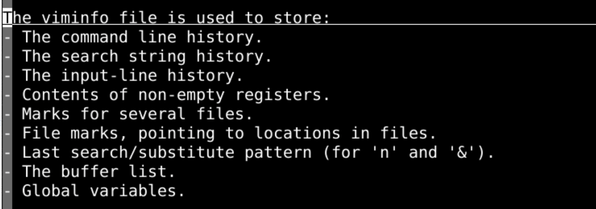
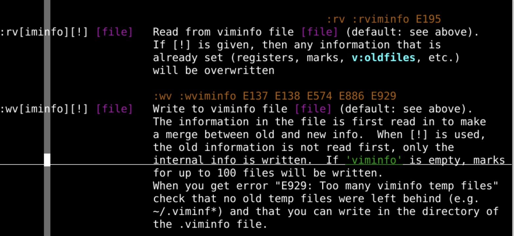
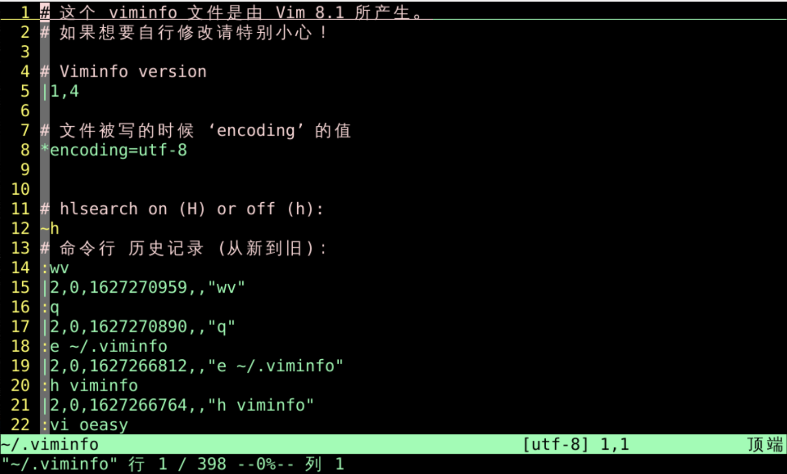
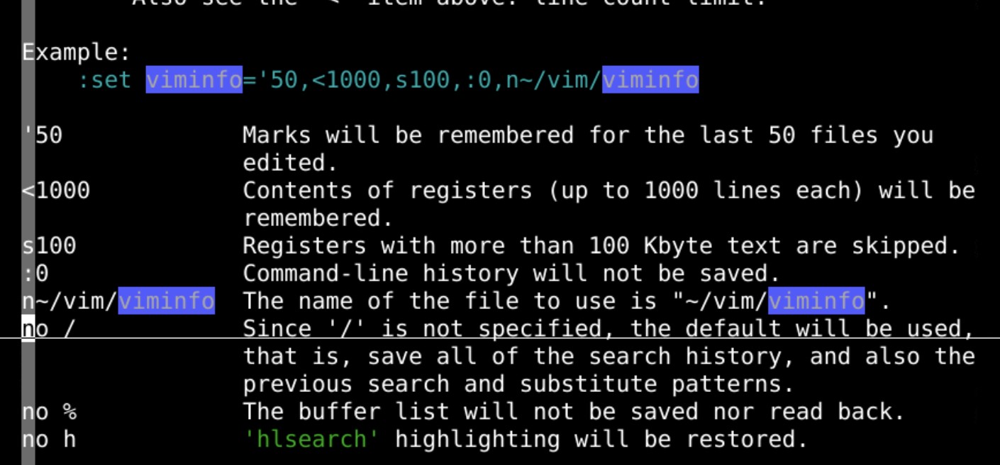
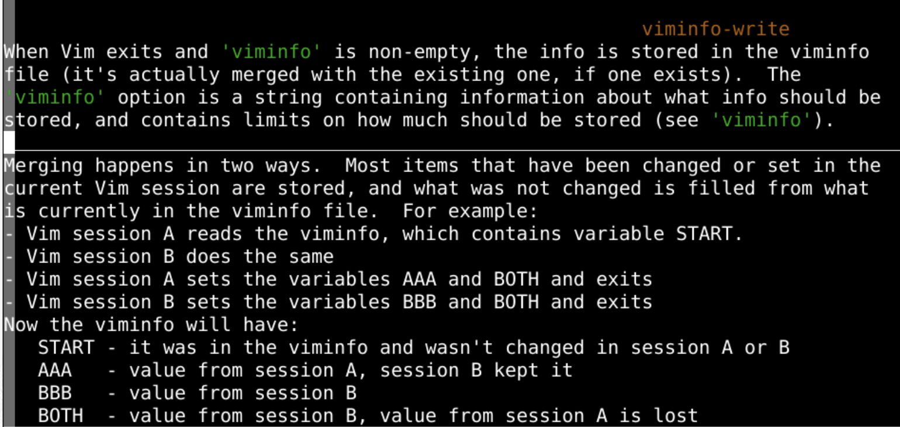

session:mkssession:source Session.vimvim -S Session.vim:mksession可以替代:mkviewviminfo?!😨:h viminfo
:mksession 保存不了的viminfo 存的是提高效率的一些东西viminfo 怎么读写呢？
viminfo:wv 写默认viminfoviminfo:rv 写默认viminfo:e ~/.viminfo
vi:rv:wv ~/oeasy/oeasy.vim~/oeasy/oeasy.vim已经有了:wv! ~/oeasy/oeasy.vim!强制写入:rv ~/oeasy/oeasy.vim
:set viminfo='50,<1000,s100,:0,n~/vim/viminfo'50 保留marker标记的文件数:50<1000 寄存器register行数:1000s100 超过100Kbyte的寄存器中的文本会被忽略:0 命令行的历史记录数:0no /搜索历史记录数:0no % 不记录buffers:0no h 不记录高亮hlsearch为0
.viminfo 文件:map <F2> :wa<Bar>exe "mksession! " . v:this_session<CR>:map <F3> :so ~/oeasy/oeasy.vim<CR>:map <F2> :wa<Bar>exe "mksession! " . v:this_session<CR>:wv ~/oeasy/oeasyviminfo.vim<CR>:map <F3> :so ~/oeasy/oeasy.vim<CR>:so ~/oeasy/oeasyviminfo.vim<CR>viminfo就在你的工程文件夹oeasy里面:mksession一起使用就可以完美复原环境了